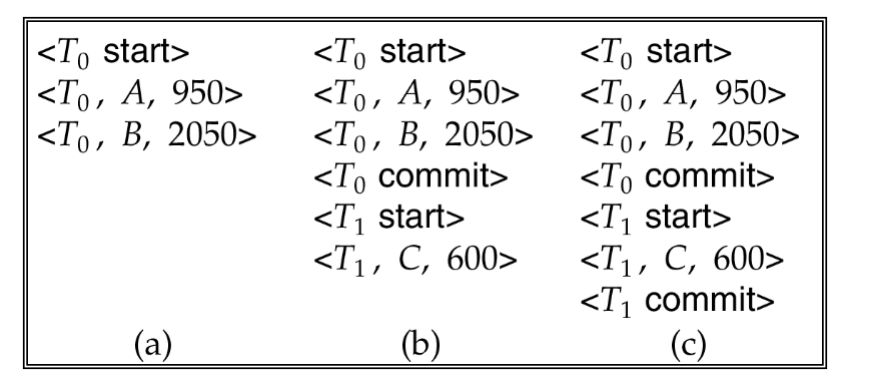
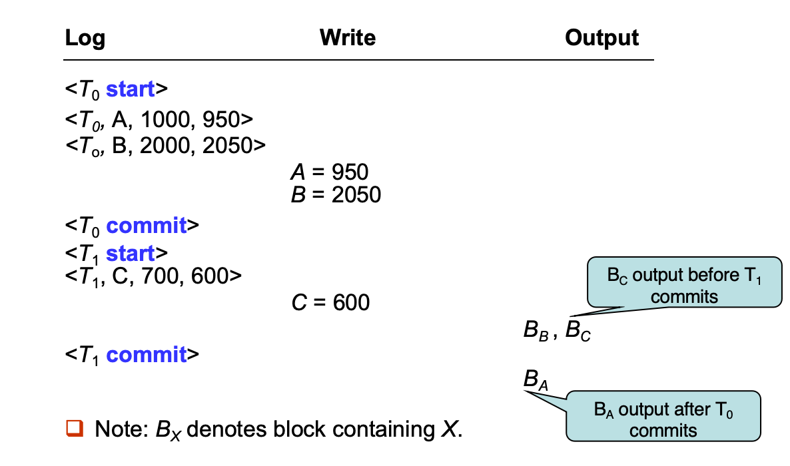
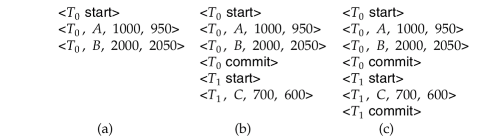
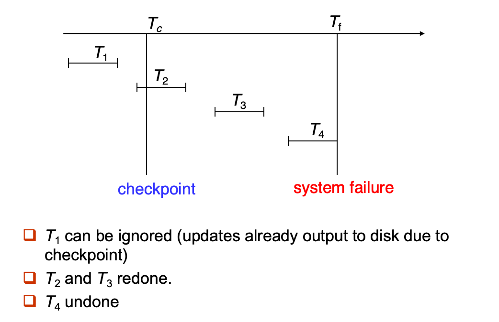

Lesson14
Recovery System
Failure Classification
事务失败类型：
- 逻辑错误：内部错误导致的，如溢出、数据未找到、错误输入等
- 系统错误：由于某种错误条件（例如死锁）必须终止一个正在进行的事务，事务本身不一定有错误
- 系统崩溃：由于断电或其他硬件、软件故障导致系统崩溃
- 停止失败假设（Fail-stop assumption）：假设非易失性存储（如磁盘）中的内容在系统崩溃时不会被破坏
- 磁盘故障：如磁头撞击等磁盘故障会摧毁磁盘存储的全部或部分数据
我们讨论简单的转账事务：
- 问题：
- 未确保事务提交的情况下修改数据库，这个时候故障，那么可能出现A钱少了B钱没加的情况
- 事务提交了却没有及时修改数据库，这个时候故障，可能导致事务成功数据库却没有发生改变的情况
- 恢复算法
- 第一部分：在正常事务处理期间采取的操作，以确保在发生故障时有足够的信息用于恢复(如记录日志)
- 第二部分：在故障发生后采取的操作，以将数据库恢复到一个满足原子性、一致性和持久性的状态(如处理回滚或重做)
*Storage Structure
*Recovery and Atomicity
Log-Based Recovery
日志（Log）保存在稳定存储（stable storage）中
- 日志是一系列日志记录（log records），用于记录数据库上的所有更新操作
日志记录流程
-
开始
text <Ti start>+ 写入对于指令
write(X)，V1为旧值，V2为写入的新值text <Ti, X, V1, V2>+ 提交：事务执行完所有语句后text <Ti commit>
基于这个流程，我们有两种更新方式：
- 延迟数据库修改：所有写操作不会立即应用于数据库，而是先写入日志，等事务成功提交后才应用
- 立即数据库修改：写操作可能在事务提交前就已经修改数据库
Deferred Database Modification
- 该机制将所有的修改操作记录到日志中，但推迟实际写入数据库，直到部分提交之后才执行写操作。
- 假设是所有事务是串行执行的
- 事务以
<Ti start>开头 - 每一个写操作
write(X)记录为<Ti, X, V>，不用记录旧值，因为我们实际还没写入 - 等到事务部分提交了，记录
<Ti commit>到日志文件里 - 日志文件被读取并开始执行操作
在这一流程下：
- 只有出现
<commit>记录的事务，才需要在恢复时执行redo - 没有
commit的事务不执行任何操作，因为它们根本没影响数据库

图中，第一个时间点无事务需要重做，第二个时间点需要重做T0，第三个时间点需要重做T0、T1。
Immediate Database Modification
- 允许在事务提交前就对数据库进行修改
-
更新日志必须在写入前就执行
- 我们假设日志的更新直接写到稳定存储
- 被更新的数据块可以在事务提交之前或之后写入稳定存储
- 数据块写入磁盘的物理顺序可以与事务对这些块进行修改的逻辑顺序不同

recovery包含两个过程：undo与redo
- 如果有start但没有commit，需要undo
- 如果两个都有，需要redo
undo先执行，再执行redo。

时间点a：undo T0, log <T0, B, 2000>, <T0, A, 1000>, <T0, abort>
时间点b：undo T1 , redo T0, log <T1, C, 700>, <T1, abort>
时间点c：redo T0, T1
一个巨大的问题是，如果已经执行了很多事务，出现redo的内容会非常多，我们引入了checkpoint的概念。
checkpoint
- 将当前所有内存中的日志记录写入稳定存储
- 将所有已被修改的缓冲区数据块（dirty blocks）写入磁盘
-
确保数据库中的数据与日志中描述的一致，避免恢复时重复重做这些更新 写入一条特殊的日志记录：
<checkpoint L>- 其中 L 是当前所有仍然活跃（未提交）事务的列表
- 执行检查点操作的时候，任何更新的动作都停止
只需要关注以下两类事务：
- 最近一次检查点
之前就已经开始的、但尚未完成的事务（在列表 L 中） - 从检查点之后开始的所有事务
我们只需要这样处理：
- 找到L中所有
<start>，然后undo之 - L之后的事务，正常处理

*Shadow Paging
Recovery With Concurrent Transactions
并发下的日志恢复机制
- 使用严格两阶段锁（Strict 2PL）作为并发控制机制
-
当执行 checkpoint 时，系统中可能有多个事务仍在执行中（未完成）
- checkpoint 记录必须列出所有活跃事务（如
，其中 L 是当前仍未完成的事务列表） - 恢复过程必须正确处理多个并发事务混杂的日志记录
- checkpoint 记录必须列出所有活跃事务（如